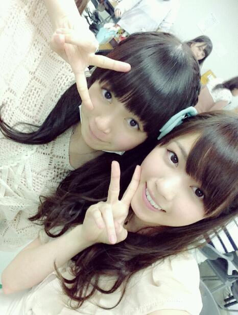
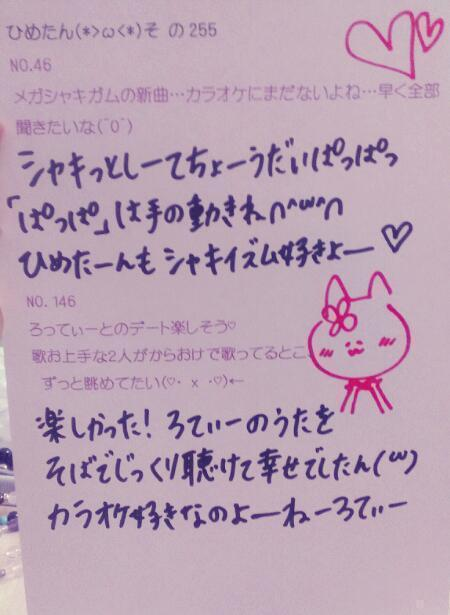
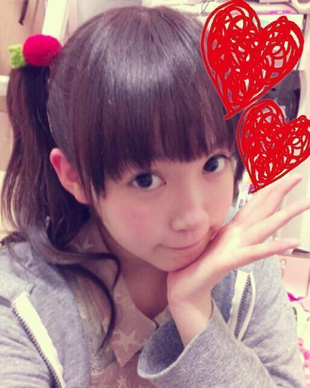
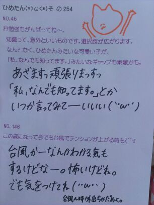
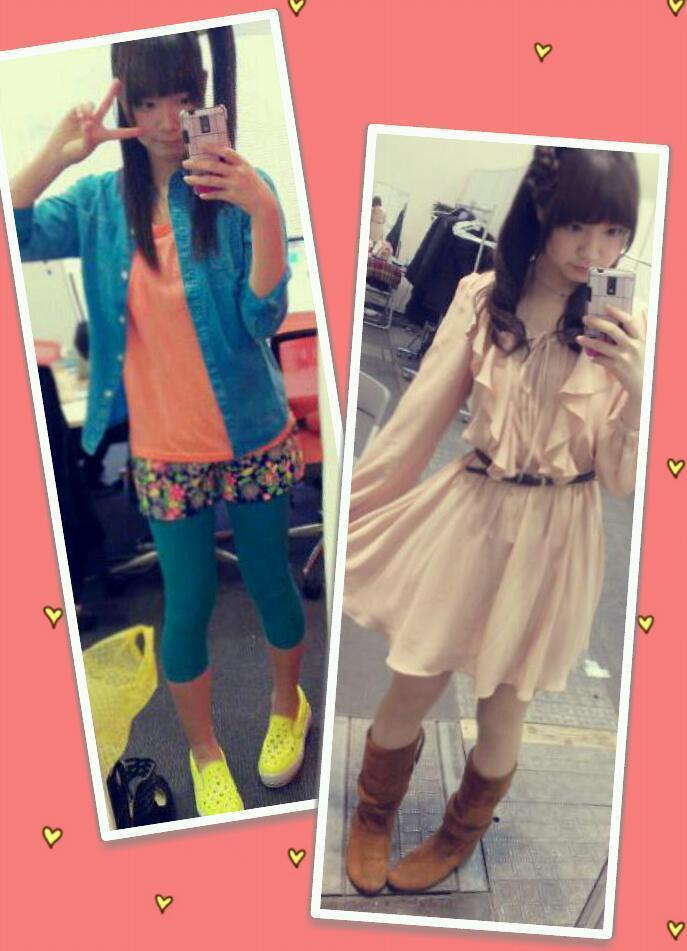
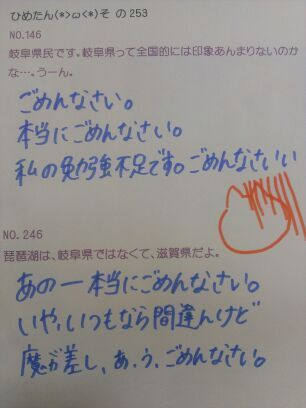
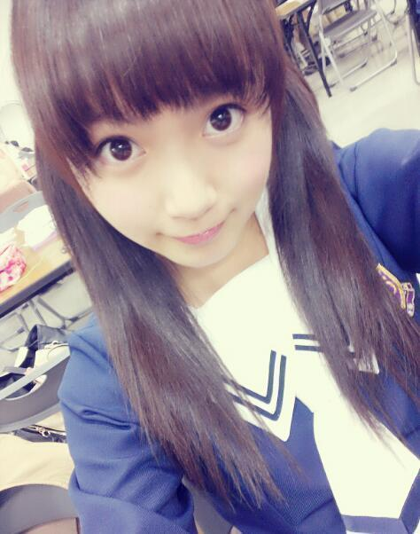
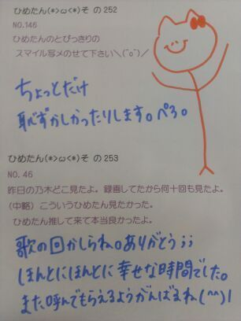
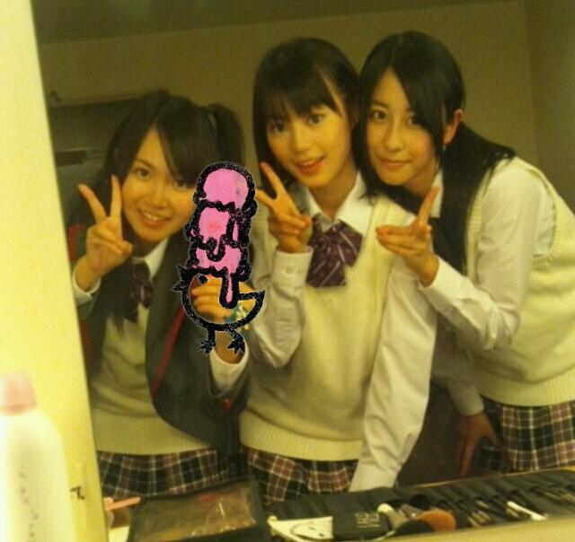
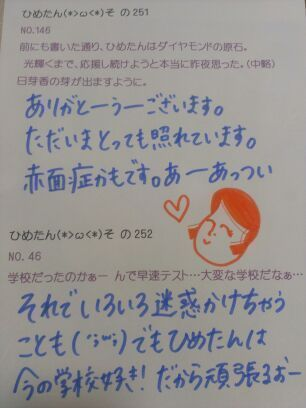

んぱあー

ななせまるですん( ^ω^ )好きー！
あのねーお部屋片付けたんだよー？
だからもうみんな来ても大丈夫だよー！
でもみんな...あんなに約束したのに...
じゃあ拡大してみますて...
そんなに撃たれたいんかい(￣ω￣)？ふっ
ちゅどどどどどどどーん
みさ先輩のブログね、あんね違うの聞いてー？
やる気がないわけじゃないんだけどね
そのー肩揉みなんて、いや全然いいんだけど
実はあのお部屋、
おっきいマッサージチェアあるんだけど
マッサージチェアをバックに肩揉みしたんだけど
だってマッサージチェア...ね？
ひめたんがどう頑張っても、
マッサージチェアには勝てないわけですよー
だって、あっちはプロだもんー
てことで写め撮った瞬間やーめーまーしーたっ☆
...笑
ごめんねみさ先輩。
またいつでも言ってね？肩揉みするよーふへへ
だってまりちゃだって
全力で会議室に置いてあったマッサージ棒
おすすめしとったもーん(｀・ω・´)
ははは密告してやったぞまりちゃー♪
さて今週末、明日か
明日は東京個握ですよみなたんー
今日はお洋服買い行くよー
いっつも決まんないんだよこれが(´;ω;`)
楽しみにしとってくださいねーっ
31日行くよーって人はぜひ教えてね
なんてゆーかな、心の準備ってものが
大事じゃあないですか。
あと、最近ハマってるものひとつ見つけた！
ハチミツ豆乳∩(・ω・)∩
豆乳飲むようになったってのは
前にお話したんだけども、そいつの進化版だよー
1.カップに豆乳300ml、ハチミツ大1入れまーす
2.レンジで温めまーす
3.完成でーす
ぜひやってみてね♪

 学校とアイドルの仕事が重なった時って、
学校とアイドルの仕事が重なった時って、
どっちを優先するん？基本はお仕事かなー
お仕事と学校行事がかぶったら
学校行事は休んだりしてきましたかなー
ただしテストとかは疎かにしたくない。
バランスってのは常に考えながら
動いてるつもりではあります(^^)
あの、質問なのかよく分からないけど、
とりあえずひめたんに聞いてみたいんですが、
(中略)
何か質問ってより、悩み相談ですね笑
とりあえず回答してくださるとありがたいです。ごめんね中略しました。でも最後まで読んだよー
えっと、とりあえず、
好きにもいろいろある、てことですよねー
わーなんだか難しいぞー(｀・ω・´)
第三者としての立場から言うならば
ふたりと握手したらいいのでは？て思うけど
ひめたんがななみんだったら
単推しでいてほしい気もするかなー。んー...
ひめたんだったら ふたりと握手する、それか
ななみんに聞いてみる！これ確実←
ひめたんは東京のどの街に住みたいですか？吉祥寺が人気って
聞いたことありますけれども
交通の便がいいとこがいいなー∩^ω^∩
次のうち趣味としてやってみたいのは？
・スノボ・ギター・盆栽ギター。けいおん！的なのを想像してる(ω)
実家にはギター２つあるよー
ひめたんは弾かんけどー
植木屋さんてどう思う？素敵だと思☆
ひめたんおうちに緑置きたい！
トラックの運転手ってどう思う?今免許取りに行ってるんだけどこれまた素敵。
取ったらひめたんも乗せてね(^^)
トランクじゃなくて助手席(^^)
ひめたんからみて、
美術部の人って、どんな印象持ってる？常にベレー帽かぶっていてほしいです...
でもそんなことないんでしょ？
ねえお願い、エンジ色のベレー帽...
俺将棋やってるんだけど 将棋のイメージは？賢い人がやるやつだよね？
ひめたんにもできるかしらー
あっこらっ ばかにすんなしー♪
 ひめたんは何か、体に良いことで
ひめたんは何か、体に良いことで
毎日続けてることはあるかな可能な日はウォーキングするようにしてる！
あっ半身浴は毎日してるかなー
あとはお風呂あがりに肌のお手入れとか
マッサージとか。
職業柄、義務のようなもんだけどね∩^ω^∩
ひめたんは、読書とかしますか？
もし、読書をするならひめたんが読んだ本で、
お勧めの本や感銘を受けた本があったら
教えて下さい！乙武洋匡さんの「五体不満足」かな
この本に出会ったのは小学生の頃だけど
幼さながらに感銘を受けました＊
みんなも読んでみてね。ほっこりしますっ
みなさんも教えてー！
 最近ねねねろ部長が
最近ねねねろ部長が
読書にハマってるみたいやけど、
ひめたんは読書する？読書かー姉妹では一番読んでないかもー
でも好きだよ∩^ω^∩
フィクションよりも自伝とか実用書とか
そっちんが好きです
近々あしゅちゃと
お茶することになった(∀)
それから、あしゅはひめたの
恋人になりましたん///
あしゅは彼氏たんってゆってくれるけど
なーんか気がひけるので
恋人ってことにしとこーと思います
旦那さまには内緒(〃ω〃)

(＊´・ω・＊)
まずお知らせ！
オフィシャルサイトに詳細出てたけどもっ
3/31(日) 個別握手会後ですねー
乃木どこの公録がありまーすー
夜遅くなっちゃうのがネックではありますが
えーテレビかー恥ずかちーとか言わないで
ぜひぜひ来てね♪お待ちしてますー
"恥ずかちー"はちょっと、
ひめたの友達の真似をしたんです
ぶっちょんっちゆーな(｀・ω・´)
そして昨日はその練習とか打ち合わせとかして、.
今日はまた別件でコメント撮りしてきましたー
詳しいことはまたオフィシャルサイトに
出ると思うので待っててね＼(^^)／
みさ姉たまと 万理華と一緒だったんっ
みさみさと駅まで
イヤホン半分こして帰ったのー///
これ自慢だよーふへっ

部屋...
部屋きったないので拡大しないでください←
約束だぞ←
言われたら逆に気になるんだよねーとか
そんなこと言う人は撃ちます。ちゅどーん
っていやいやお部屋の話でなくて
今日は りぼんじゃなくていちごを付けてたのー
って話よ＼(^^)／
とまとじゃなくて ぽてとじゃなくて
いーちーご＊

 ひめたん今お財布に
ひめたん今お財布に
いくら入ってますか？（笑）ちょっとそーゆーのは なんかりあるだなぁー
当ててみてごらん？正解は言わないよ？
勉強のやる気があまり出ない私を
応援して下さい。←お...お勉強がんばったら...
ちゅーしちゃうぞ...///
さあどうだ。やる気は出たかな
ちなみにひめたんは３月中に課題終わらせる
つもりだったのにやる気が出んのだよっ
道でお金を拾ったら
いくらから交番に届けますか〜?
まさか1円からじゃあないよね〜!?アルミをばかにしてるとかそーゆーんじゃなくて
１円ならきっと拾わないかなー笑
てかお財布ぽーん落ちてても
怖くて拾えないと思うんだけど(´・ω・｀)
最近ダンスがうまくなりたいと
思ってるんだけどコツとかってあるのかな？？まずは気持ち！
楽しむことが一番かと＊
ひめたんがダンスを小学校1年生から始めた
きっかけは何ですか？あのねー自分の意志とかじゃなくて
なんで習ってたんか自分でもわからんけど
姉さんが習ってたから、きっとつられたのね(ω)
でも それがなかったら
今頃ここにいないんだろうから
そーゆ意味では姉さんのおかげです＊
私はディズニーが大好きなんですけど、
ひめたんはディズニーで１番
印象に残ってる思い出とかありますか？中２の修学旅行でディズニー行ったんだけど
ホテルに4000円置いてったのね
ほらー修学旅行ってお小遣い決まってるからー笑
あと、ディズニー行くときは
毎回必ず耳を買う！コレクター∩^ω^∩
もしプロデュースしてもらえるなら
どんなアイドルをやってみたいですか？ソロってのはちょっと恥ずかしいから
ユニット希望ではあります♪
ぴんくーのふりふりーを着たーいー
 箸の持ち方、たまに戻ちゃったりしない？
箸の持ち方、たまに戻ちゃったりしない？
(´・ω・`)
もう今でも箸の持ち方は完璧なんですか？
元の持ち方に戻っちゃったりしませんか？それが戻らんのだよ。どやりんぬ
マネキンの個人PVで最後に串カツが出されたけど、
結局あれは手づかみで食べたの？ええ、手でがしっとつかんで食べましたとも。
もうひとつ裏話を言うと、撮影で使った箸は
おうちにもって帰りました＼(^^)／
「狼に口笛を」のPVでさ、ゾンビに襲われかけて
伊藤ちゃんずを押し離すシーンあるじゃない。
あの時さ、中元さん二人に何て言って
押し離してるの？ひたすらきゃーきゃーゆってた気が。笑
はいカットーの瞬間あの現場は
笑顔に包まれます＊
最近いろいろと考えちゃう(´・ω・｀)
それから、
もっといろんな事を知りたいな
って思う今日この頃...
明日本屋さん行こかなー

(＊´・ω・＊)
らりんとふたりで
インタビュー受ける夢を見た(・ω・)ノ
前のブログのネタを
いつまでも引きずって申し訳ないけど
カラオケのセトリを教えてねって声が
いっぱいあったのだけど
ふたりのこと勝手にしゃべって
いいかわからんので
ひめたんの歌ったうたは教えるんっ
えっとねー...
...
...え、なんだっけか(´・ω・｀)忘れた
え、えっとね、ひとりで何歌ったか忘れたけど
いくちゃんとふたりで「タッチ」、
るんるんとふたりで「フレンズ」
歌ったような記憶がある！お！
フレンズはハモったはもった∩^ω^∩
そうねーふたりは
意外ってか、
あーそんなの歌っちゃうのねーみたいなのが
あって楽しかったですん♪
カルテットは四重奏、と。笑
ごめんね毎度毎度(´;ω;`)
調べてから書けたらいいんだけど
正解だと信じきってるもんだからさ...
それから、最近よくいただくコメントが
おにゃーのこからの
ひめたんみたいになりたいよー
ひめたんと同じ服買ってもよいかしら？
系な質問。嬉しい。盛大に照れまする(〃ω〃)
お洋服とか、グッズとか、もっともっと
写めってこっかなーと思っておるよー///
みんなオソロっちさんしよ＊！
よーしっみんなをひめたんにしちゃうよー
おとこのこも ひめたんにしちゃうよー
おにゃのこのみなたま、よかったら
こんなブランド好きよ！とか
こんな美容グッズおすすめよ！とか
なんかあったらぜひ教えてね∩^ω^∩
おとこのこは ぴんく着るのよー
ぴんくが似合う人は素敵よー
恥ずかしいとか言っちゃだめだめよー♪

左はプリンシパルフライヤーの衣装！
ひめたん水色をこんなにもぶわー着ることは
たぶん人生初です←
靴かわいいー
衣装さーんーこれどこのー(´・ω・｀)？
右は前回の個幄。
そういや全身載せてたかった気がしたものでー
ごめんぬ(´・ω・｀)どこのか覚えてないや
次からはちゃーんと覚えとくね;;

 ひめたんは髪型変える予定はないの？
ひめたんは髪型変える予定はないの？
ショートにしてみたいとか思わない？あのねえひめたん生まれて今まで
ショートにしたことないんよね
だから怖くて短くできない(´・ω・｀)
次のシングルの特典、
また個人PVみたいのだったら、
どんな企画がやりたいですか？バケツプリン作りたい。
遊園地の着ぐるみの中の人...じゃなくって、
えーと、何て言うのかな、そのー、
遊園地のうさぎさんになってみたい。
気球に乗ってみたい。
えん？わかってますよ？おーしーごーとっ
別にひめたの勝手な欲とかそんなこと...う...
 ひめたんさんは身長が
ひめたんさんは身長が
何センチにでもなれるとしたら
何センチになりたいですか？今の身長が159なんだけど
なんてゆーか真ん中なんだよねいちばん。
ちっちゃいかおっきくなってみたいけども
どーしよっかなー(v)
みんなは ちびひめたん のっぽひめたん
どっちと握手したい？デートでも良いよっ＊
今度新しい眼鏡買おうと思うんですけど、
どんな眼鏡がいいかなー？
眼鏡の色とかも教えてー？
ひめたんは、メガネ男子は好きかな？
好きだった場合、好きなメガネを教えて！？めがね男子、好きよー///
黒ブチ青ブチなんか似合ったら
かっこいいんでねーのー？なんて思いながら
ひめたん自身は茶ブチ持ってる。ダテだけどねん
ひめたんは疲れた時に入るお風呂には
入浴剤とか入れるん？入れる！疲れてなくてもいれる！
してみたい髪色ってある？おばあちゃんなったら
紫とか素敵だと思(*^ω^*)
いまの髪色は結構気に入ってるけどもー
もし世界が終わるとしたら最後に何を食べる?バケツプリン。笑
ご、ごめんここ数日
バケツプリンしかゆってない気がせんでもない...
じゃあ スカイツリーパフェ。どやんぬ(´pωq｀)
他のメンバーで「意外と〇〇」みたいな感じで
ギャップあるメンバーいる？ちまは中身は年相応。見た目が大人っぽいだけに
まあギャップと呼べるかなーと
ひめたんお姉たんは安心するわけです。
逆はまりかかなー
見た目はど、童顔だけど(おーまりかごめんごめん)
でも一緒にいると やっぱりお姉さんだなーと
思います(ω)しっかりしてる！
なんか、こう
おにゃーのこらしい趣味が欲しいのさー
お花つみ とか、花占い とか、
お花の冠を作ること みたいなニュアンスのっ
あ別にお花じゃなくてもいいんだけどねっ
なんか思い付いたら教えてねー♪あでゅ

(＊´・ω・＊)

今日は乃木ここ撮りましたー
みなさんおまたせしましたー
最近握手会で
「次の乃木ここも楽しみにしてるよ(^^)」
って方がいっぱいいらっしゃったので
取り急ぎ報告させていただきまっす☆
前々回...ですかね
全握後のブログのコメント
全部反映されたみたいだから読んでたら
はじめましてって方がいぱーいで
とってもとっても嬉しかったですん(・ω・)！
ありがとうっこれからもよろしくですー
そして今までのひめきゅんさんも
変わらずよろしくねー
はつらつ、うんちく、ね
読めた人 結構おったね！
みんなえらいねー
えらいぞーいいこいいこー...
あ、いや真面目にゆってます。
別に棒読みなんかじゃ、ないんだからねっ。
中３組の正式名称は
ちょっとー公開しない方向で
話がついてるので
気にしないでね(｀・ω・´)♪
気軽に中３組って呼んでくれたら
ふたりとも喜ぶと思ーよっ
そしてるんるんブログ見たぞ、
今度は３人でディズニー行こー！

 ひめたんは乃木坂メンバーに
ひめたんは乃木坂メンバーに
感謝の言葉を伝えるとしたら、何て言うの？↓→→↑↓
ありがとうー
矢印はイントネーションねー
どうやらね、なまってるみたいです、笑
だーいぶ標準語になりつつあるひめたんも
ありがとうーは広島弁なんだと。
5th個人PVの "ありがとうー" は広島弁らしい...
メールやコメントもらった時に いつも
この言葉が入ってたら
うれしいって言葉ある？(^^;)ゞあったかい言葉ならなんでも嬉しいけどねー
"応援してるよ"も"ひめたんみたいになりたい！"も
"もうちょい英語勉強しようか、笑"も
なーんでも嬉しいです♪
ひめたんの最近の
お気に入りアイテムを教えてください！ 今のマイブームはなんですか？マイブームとゆーか
美白パックをねー毎日やってるよー(〃ω〃)
ひめたんの目ぢからが凄いのに
気づいたのはいつぐらい？
あと小さいときから目ぢから強かったの？凄かーないと謙遜しつつ。笑
やーもーほんとにメンバーに言われるまで
そんなこと考えたことなかったけどねん
赤ちゃんの時から目はこのサイズだから
比でゆったら同時の方がもっとぱっちり(ω)
「タッチ」から更に気になりましたｗ
たくさんは行けないけど毎回少しでも
ひめたんに会いに行って良いかな？ありがとうー(´;ω;`)
タッチもほんまに気持ちよかったですー
もちろん、もちろんもちろん
いつでもお待ちしておりますえーい♪
乃木どこや乃木ここで、
カラオケ歌えるチャンスがあったら、
また立候補してくれますか？真っ先に立候補しますと思います！
ひめたんが
一生に一度はやってみたいものってある？バケツプリンをつくる∩^ω^∩
ようやく将来の夢ができて、
でも一緒に目指す仲間がいなくて。(中略)
やっぱり"仲間"を見付けた方がいいんでしょうか？
ひめたんならどうしますか？将来の夢かーなんか素敵ですね♪
そーやって悩むのも大事なことかとは思うけども
ひめたんなら...どうするかな...
基本自分の意志ってか決断力がないし寂しいから
きっと本能で誰かのそばにいるんだろうなー///
仲間は大事だけど無理して作るもんじゃないし
そーやって頑張ってれば
同じ志をもつ仲間が現れるんでないかしらね？
まずはがむしゃらに走ってみたらいかが＊？
 このところ「ぐっ」と大人っぽくなりつつある
このところ「ぐっ」と大人っぽくなりつつある
ひめたん...何か変わったと思うこと、或いは自身で
何か意識して変えていることとかありますか？ほんとー(´pωq｀)？わーいてへぺろりん
別に大人っぽくなるように
意識してることはないんだけれどもねー
あれーみんなー
オタフクさん知らないの？

(＊´・ω・＊)
１年越しの夢が実現したー＼(^^)／
どーん☆

えーそうです中３組！
中３いたいこリズミカルほねほねだっ...ごほっ
あの、正式なチーム名は長いんで
いいの気にしないで。 .
いくちゃん・るんるん・ひめたんの
どんるんたん で遊びましたん( ^ω^ )＊
ちなみに写めは現役の中３の秋のです
どうかな、あの頃より
みんなちょっとお姉たんになったかな？
え、今日の写め？撮り忘れたのよ...
それが街を歩いてたらばったり
モーニング娘。の生田衣梨奈ちゃんに
会ったもので
生田衣梨奈ちゃんと生田絵梨花ちゃん...
貴重すぎた！
こんなことってあるのね(・o・ノ)ノ
ほんとに楽しかったですー
ほんとに飽きないです ふたりとも
ああ笑った笑ったありがとう ふたりとも
ふたりのこともっと大好きになった ふたりとも
棒読みゆーな(｀・ω・´)
いろいろ楽しかったけど
カラオケがほんとに楽しかった
ソロ・デュエット・カルテットー！

 もしペットが朝起きたら
もしペットが朝起きたら
喋れるようになってたらどんな話したい？家族の中で誰が一番好き？全員はだーめ♪
っておやつ片手に聞いてみたい。にっしし
いやいや、りあるにみんなだって
気になるでしょーえー？
最近どのように過ごされていますか？学校がないから
乃木充って感じかしらね(^^)
若月曰く、ひめたんは賢いみたいだけど
ひめたんが知ってる一番難しい言葉？
豊富な語彙を是非！笑みゅみゅに言われるなんて嬉しいねー///
別に賢くなんかないねー
過去の栄光ってやつですよ。
「溌剌」「蘊蓄」とかゆー難しい漢字を
テスト前は頑張って覚えておりますけども。
ちなみにみなさんよーめーるー？(´pωq｀)
正解は覚えてたら次回。調べるのアリ！
ひめたんは神秘的な生物、特に深海魚！
ひめたんは興味ありますか^_^えっとーなんてゆーのかな。
ひめたんは自分から進んで
図鑑を見るような子ではないかなー笑
集中力切れたときって どうしてますか？寝ます。
勉強は特に、集中できる環境にいないなら
する意味なんてないと思う！お
ひめたんはすごく歌が上手いけど、
日頃からボイストレーニングとかしてるのかな？ありがとーうござます///やー照れるなー
もともとスクール通ってたもので
歌うことがすーきなーのよーん♪
ひめたんみたいな可愛いJKになりたい！
んやけど、学校を楽しむ秘訣とゆーか、
なかなかうまく初対面の人と話せないので
なんかアドバイスください！嬉しいよーありがとう(〃ω〃)
んーとりあえず校則が厳しくないのであれば
制服のリボンにマイメロちゃんボタン縫いつけ
机周りにゴミ箱・収納box・ティッシュを設置し
ブランケットを年中装備しましょう。
最初の自己紹介はめちゃ笑顔で言うと
素敵のことになると思うよ♪頑張ってねー＊
毎月買ってる雑誌ってある？今まではいろんな雑誌をちょこちょこ
買ってたけども
これからはRay読者になろうと思ってるとこ！
今欲しい物がいっぱいあって
困ってます(´・_・`)ひめたんならどうしますか？リストアップしてみるのはいかが？
ひめたん、もしそうなったら
「じっくり検討する」のが苦手だから
どかーんっと買うんだろうなー(´・ω・｀)
最近めっきり物欲がなくて。うぬう...
僕、年下(中2)ですがコメントする時とか
タメ口(話し言葉)でもいいですか？(´・△・`)/~~全然おっけー！
親近感わいてむしろ嬉しす( ^ω^ )

(＊´・ω・＊)